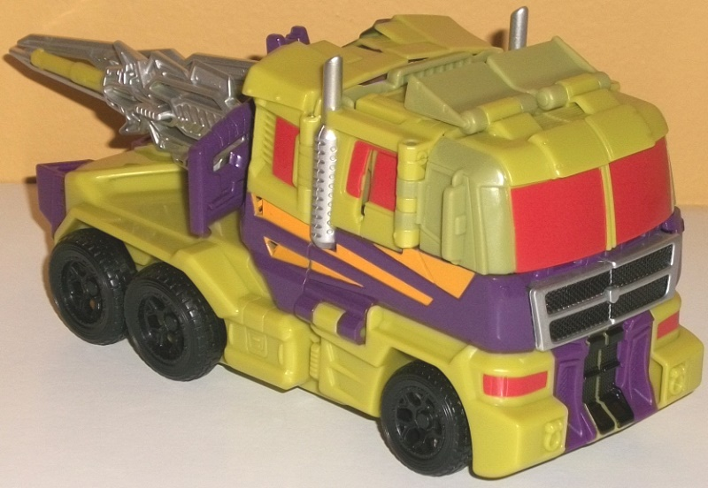
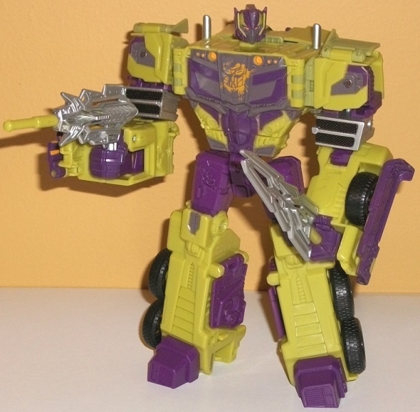
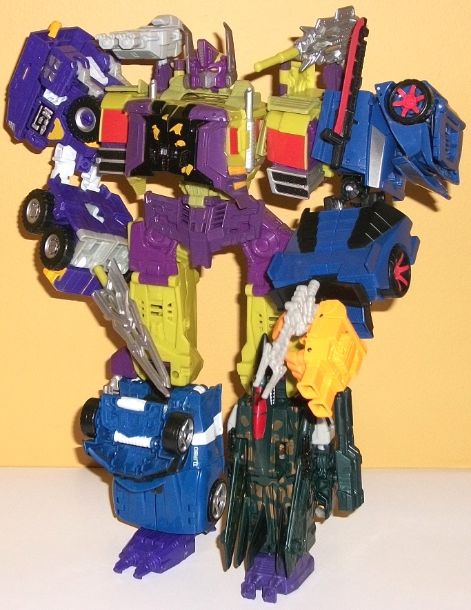

Toxitron
(w/ review of Wreckage) [TFCC 2017 Subscription Service Exclusive]
Toxitron
(w/ review of Wreckage) [TFCC 2017 Subscription Service Exclusive]
Toxitron


Allegiance
: Autobot/Wrecker
Size
: Voyager (comes packed with
Counterpunch
and
Starscream
)
Difficulty of Transformation to Robot
:
Medium
Difficulty of Transformation to Torso
:
Easy
Color Scheme
: Dark dull purple,
dull pale greenish yellow, moderately dark dull purple, and some silver,
black, dull purplish gray, moderately light red, and light pale orange
Individual Rating
: 7.9
(NOTE: Because this is a repaint, this is
not a full-blown review. This mainly covers any changes made to the mold
and the color scheme, and merely compares it to the original Combiner Wars
Optimus Prime toy. For a review on the mold itself, read the review of
the original CW Optimus Prime mold
here
.)
Toxitron's already had
a
FunPub exclusive toy
of him released (for
those who don't know, the original toy was a cancelled exclusive of the
RiD
Scourge mold
from back in the aughts), but this is a more "normal"
version of him that isn't in the Animated aesthetic. Like with the Animated
BotCon exclusive, Toxitron's main colors are a pale greenish yellow and
a dark, dull purple. The main colors may not be absolutely amazing, but
they go together pretty well and are definitely very "Decepticon-y" colors.
(The only thing is... Toxitron's an Autobot here, with a goopy, partially
scraped-off Autobot symbol on his robot chest. Story-wise this is justified
so that Toxitron can hang out with his other combining Wrecker buddies,
but for those who wanted their "regular" Decepticon Toxitron, this may
be a bit of an issue, especially since it's paint on TOP of other paint
so a bit of paint remover may not necessarily work to get rid of it.) There
are two different shades of purple, with the paint a noticeably darker
shade than the plastic. They're not COMPLETELY different, but it is different
enough where it's a minor annoyance if you're a stickler for detail. As
far as the dull greenish yellow-- it's a pretty unique color, you probably
either love it or hate it. Given how "toxic" it looks, I'm more of the
former. It's not a color I'd like to see on a lot of TFs, but for a 'bot
as unique as Toxitron I like it. As far as more "normal" colors, there's
some black (mostly on the wheels, but also on the center of his rear backpack/faux
truck combiner chest section), as well as some silver on his sword and
front grill. There's some dull gray-- with a slight purplish tint to it--
on the robot chest, knees, and shoulders as well. There's also a really
nice shade of red used for Toxitron's truck windows and headlights, which
just looks GREAT against the darker colors and complements the yellow,
too. Last but certainly not least, there's some light pale orange-- not
just on the aforementioned Autobot symbol on his chest, but also on the
faux headlights on his robot chest, on stripes on the side of his truck
mode, and some unique "goopy" paint apps on his faux truck front on his
back. In truck mode he has plenty of visible paint apps that come together
quite well, but in robot mode his legs are a bigger portion of his color
scheme and are woefully underpainted compared to the rest of him, which
is disappointing for a FunPub toy. Some more orange or red on those legs
really would've worked wonders.
Toxitron has a new headsculpt
for his "normal" robot mode, which was not made by FunPub but Hasbro, and
was never used until now. It's a combination of Optimus' head and the Decepticon
symbol and looks quite nice and evil-- it was definitely intended for a
Nemesis Prime redeco that never happened. It looks really nice all-around,
especially with the orange eyes. Otherwise Toxitron has all the mold changes
made for
Combiner Wars Motormaster
, but
keeps the combiner head for Optimus. Unfortunately this is an issue in
vehicle mode, as the Optimus Maximus headsculpt doesn't quite fit in the
square Motormaster faux truck combiner chest. They're just small gaps in
between the panels, but they are noticeable.
Wreckage
(Combination of Toxitron, Counterpunch, Fractyl, Impactor, and Bluestreak)

Allegiance
: Wrecker
Individual Rating
: 8.2
Wreckage is a bit of
haphazard combiner-- with the exception of
Impactor
and
Fractyl
both being previously established
as Wreckers, these guys don't have all that much in common. That said,
as a whole color scheme they do fit together a bit better than their "nemesis",
Thunder
Mayhem
.
Bluestreak
and Counterpunch
are both roughly the same shade of blue and thus complement each other
quite well, and there's a good amount of purple strewn across all three
of the 'bots that make up the arms and main torso. Even for the legs, the
hand/foot/gun attachments are purple, adding some purple there as well.
The only one that's most obviously "his own 'bot" is Fractyl, who doesn't
have a major color in common with any of the others. Granted, green is
kinda close to blue, I guess, but that's about it. Given how many Combiner
Wars gestalts have been released by this point, I do really appreciate
the added "touches" to make Wreckage more unique, especially since he doesn't
have a new headsculpt. For one, Counterpunch's arm mode has a bright orange
fist, which is basically what's left of Punch, and of course, now he's
an arm, so it's his "Punch Mode". Pretty creative and kinda hilarious,
really. The REALLY nice touch, though, is replacing the hand/foot/gun from
Impactor with the blade of the sword from Toxitron, essentially "copying"
Impactor's right arm on a larger scale, which is simply brilliant, especially
since there's no mold changes required to do this. The bottom part of Toxitron's
sword and Bluestreak's hand/foot/gun, meanwhile, stick into Toxitron's
normal robot hands on the shoulders of the gestalt mode to give Wreckage
some more firepower. (Impactor's hand/foot/gun is used for the Bluestreak
foot.) I really love the uniqueness of this. Unfortunately Toxitron's mold
makes the worst torso out of all the CW voyager molds, but if it wasn't
for that this would be my favorite FunPub gestalt-- it's certainly the
most creative, regardless.
Toxitron Bio
:
MOTTO: "Pursuit of perfection creates
demons, and demons have a way of coming back to haunt."
Forgotten. Abandoned. Left to rot in
purgatory. This will not be the legacy of Toxitron. A lone scavenger found
by Shockwave, Toxitron was promised a better life through modifications,
enhancements, and a reputation that would be sure to last for eons. In
a single word: perfection.
Toxitron became the preferred vanguard
for any incursion that required the removal of the local inhabitants. After
being air-dropped or rising up from the bowels of the city, toxic gas would
pour from his superstructure and cause instant decay among both structures
and other Cybertronians. As part of his march of desolation, Toxitron could
unleash destructive energies directly from his hands and eyes, or be channeled
through a plethora of other weaponry.
However, perfection had its downside,
and these gifts granted by Shockwave did not come without a price. When
not on missions, Toxitron had to be kept in a state of cognizant stasis
to protect his fellow Decepticons. Eventually, as other bots came to possess
special abilities from Shockwave's modifications, more and more time passed
between missions until finally, Toxitron was forgotten about altogether.
Angered by his abandonment, he vowed to take revenge on those whom Shockwave
found to be more perfect.
Strength: ?
Intelligence: ?
Speed: 5.0
Endurance: ?
Rank: 2.0
Courage: 7.0
Fireblast: ?
Skill: 5.0
TFSS 5.0 Toxitron has
a unique color scheme and is a great alternative for those who wanted the
character, but not in the Animated aesthetic. I do wish he had a new combiner
headsculpt (and that the combiner headsculpt fit in his "backpack"), but
in general he's a unique version of the mold with a great new headsculpt
and some unique paint apps. I wish he had a bit more orange "goo", and
the Autobot symbol may irk some, but in general he's a solid choice, even
if you don't want to combine him. As a combiner torso he's a bit weaker
simply because of the mold. Recommended if you're in the market for FunPub
exclusives, but recommend not as much as Bludgeon.
Reviews by Beastbot
Back to BotCon/OTFCC
Exclusives Index